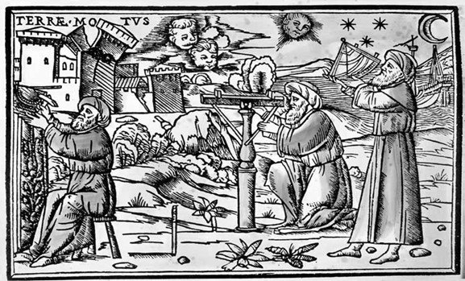
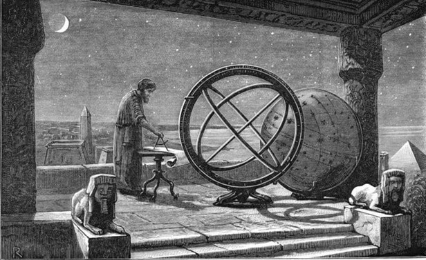
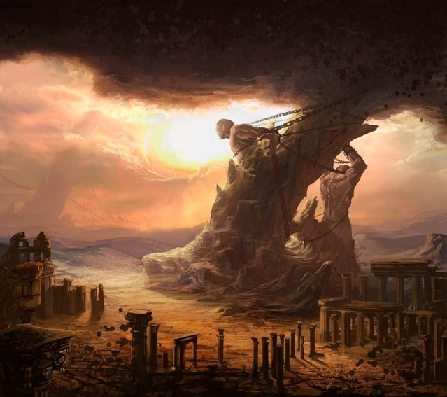

Se não for muito incômodo, você poderia fazer o que estar pedindo abaixo? :)
Prazer em lhe conhecer, (nome) <3
Parágrafo introdutório
Na Grécia Antiga, os corpos celestes eram observados a olho nu. As conclusões sobre a origem do Universo, sua estrutura e tudo que o compõe eram explicadas de forma racional por meio dos elementos naturais que os filósofos pré-socráticos observavam. Todo o estudo relacionado à origem do Universo, evolução e à sua composição, está dentro da Cosmologia.
Naquela época, sem o auxílio dos meios tecnológicos de hoje, os filósofos tentavam entender a origem do Universo através da observação. Hoje em dia, a cosmologia se confunde muito com os estudos da Astrofísica. Ambas as áreas estão dentro da Astronomia, mas se diferem quanto ao objeto de estudo. Os estudos cosmológicos são focados na origem do Universo, enquanto a Astrofísica estuda a estrutura e propriedades dos corpos celestes.
Vamos entender melhor como a cosmologia começou!
História da Cosmologia
A palavra cosmologia deriva do grego “cosmoslogos”. Ou seja, cosmos significa universo e logos possui significado de “racionalidade, razão, organização mental” ou “ciência“. Sendo assim, as análises cosmológicas têm como objetivo entender o funcionamento do Universo, bem como sua origem e composição.
Os cosmólogos – cientistas que estudam a cosmologia – utilizam de recursos lógicos que fogem de fabulações ou narrativas que recorrem à mitologia. Antigamente, com os filósofos pré-socráticos, a explicação do Universo também fugia dos conceitos mitológicos muito arraigados naquela época. Apesar de utilizarem o raciocínio lógico, os cosmólogos gregos não possuíam meios tecnológicos para avançar com os estudos.

Observação dos astros na antiguidade
Dessa forma, todas as conclusões à cerca do Universo eram feitas a olho nu, com base nas observações da natureza e experiências empíricas. Os primeiros filósofos a serem chamados de cosmólogos foram Tales de Mileto, Anaximandro, Anaxímenes, Pitágoras, Heráclito e Demócrito. A principal característica entre eles era a fuga das explicações mitológicas sobre a origem de tudo.
Ou seja, a explicação sobre o Universo deveria ser feita por meio do raciocínio lógico, por algo que fosse sólido em nexos causais. Além disso, os filósofos buscavam observar a natureza e, por meio da observação, encontrar algo que fizesse sentido. As explicações místicas, naquela época, já não cabiam como explicação para a origem do Universo.
Cosmologia grega
Os primeiros estudos cosmológicos eram feitos sem o auxílio de instrumentos de observação, muito menos com cálculos matemáticos complexos. Os filósofos pré-socráticos detinham apenas da observação a olho nu e das experiências empíricas. Assim, o primeiro cosmólogo da antiguidade foi Tales de Mileto.
O primeiro filósofo da tradição ocidental tentava, por meio da observação, encontrar algo que explicasse a origem de tudo. Para ele, o elemento que tinha dado origem a tudo teria sido a água.
Hoje em dia, o pensamento parece absurdo. Mas, naquela época, as ideias do filósofo foram um grande avanço para o entendimento do Universo.

Observação do Universo para entender a origem de tudo
Após Tales demonstrar suas ideias sobre a origem de tudo, outros filósofos embarcaram nas observações dos elementos da natureza a fim de encontrar mais respostas. Nesse sentido, Anaximandro, que inclusive era discípulo de Tales, acreditava que a origem de tudo seria aquilo que é infinito e interminável. O filósofo chamava a origem de àpeiron.
Em seguida, foi a vez de Anaxímenes, discípulo de Anaximandro, que, por meio das observações, concluiu que a origem de tudo estaria no ar. Mais tarde, Pitágoras demonstrou que a origem estaria, na verdade, nos números. Já, para Heráclito, a origem seria a fogo. Ou seja, os filósofos pré-socráticos dedicaram tempo para analisar e observar os elementos da natureza que pudessem explicar a origem do Universo.
Conceitos de cosmogonias
O conceito de cosmogonias está ligado à ideia mitológica da criação do Universo. A princípio, a palavra cosmogonia vem do grego cosmogonia e significa a gênese do universo.
Nesse sentido, e assim como ocorre com as demais mitologias, a mitologia grega tentava explicar a origem por meio de narrativas fantasiosas, mitos e seres sobrenaturais.

A origem de tudo era explicada através da mitologia
Assim, os primeiros filósofos tentaram, por meio do raciocínio lógico, desmistificar a ideia sobre a origem do Universo. Ou seja, as explicações não faziam referência aos seres mitológicos ou às histórias fantasiosas.
Para se ter um exemplo, na mitologia grega, a gênese teria ocorrido por meio dos titãs, como Gaia, Chronos e Chaos. Já os seres humanos e animais, seriam criação dos deuses que os titãs criaram.
Cosmologia moderna
A tecnologia e a forma de estudar cosmologia evoluíram muito até chegar ao que é hoje. Porém, em 1700, já era possível, por exemplo, estudos que identificaram a Via Láctea.
A identificação foi feita por pelo astrônomo alemão William Herschel. Depois de algum tempo, em 1918, foi a vez de Lloyd Shapley descobrir em que posição o Sistema Solar estava na Via Láctea.
Com o auxílio de cálculos matemáticos avançados, fórmulas físicas e aparelhos tecnológicos; foi possível criar o modelo cosmológico padrão. De acordo com o modelo, o universo tem, aproximadamente, 13,7 bilhões de anos. Além disso, os cientistas sabem que o universo possui expansão acelerada, mas de forma homogênea e isotópica (quando, em todas as direções, as características são as mesmas).
Universo Racionalista
Portanto, hoje em dia, é possível concluir algumas características em relação à composição do Universo, como:
Formado por 74% de energia escura;
Possui 22% de matéria escura e 4 % de matéria comum;
A matéria comum que forma o universo é composta por gás, estrelas, poeira e outros corpos celestes.
Atualmente, a principal questão que envolve os cosmólogos é a expansão do universo. Em 1917, por exemplo, Willem de Sitter desenvolveu um modelo cosmológico em que o universo não é estático. Mais tarde, a teoria serviu como marco para o início dos estudos da Cosmologia.
Por fim, entre 1922 e 1927, alguns cientistas, como Alexander Friedmann, Georges Lemaître e Arthur Eddington; criaram modelos que exemplificavam como o universo estava em expansão.